Workshop Calculation and science
Introducation of science
The Mechanic Motor Vehicle (MMV) trade is a two-year vocational training program under the Craftsmen Training Scheme (CTS), meticulously designed to equip trainees with the necessary skills and knowledge to repair, overhaul, and service motor vehicles such as cars, buses, trucks, and two-wheelers. Aligned with the National Skill Qualification Framework (NSQF) Level-4 or Level-5, this course provides a comprehensive blend of trade theory and practical skills, enabling technicians to diagnose, service, and maintain various automotive systems, including petrol/diesel engines, transmission systems, suspension, brakes, steering, and electrical components. During the course, trainees learn to examine vehicles to identify faults—using modern scanning tools or by inspecting running engines—and perform necessary repairs, such as grinding valves, replacing piston rings, and overhauling fuel systems (MPFI, CRDI) to ensure optimal performance. The practical training also covers specialized areas like AC system servicing, air/hydraulic brake systems, and increasingly, the basic components and workings of Electric Vehicles (E.V). After successful completion of the training and passing the All India Trade Test (AITT) conducted by the National Council for Vocational Training (NCVT), a National Trade Certificate (NTC) is awarded, which is recognized globally. Graduates of this program find diverse career opportunities, including working as qualified mechanics in auto repair shops, authorized service centers of major manufacturers, fleet maintenance companies, or as public sector technicians in state transport undertakings, with options for further specialization or self-employment. The training emphasizes not only technical skills but also safety protocols, including proper use of personal protective equipment, fire fighting, and adhering to environmental regulations regarding the disposal of used oil and parts.
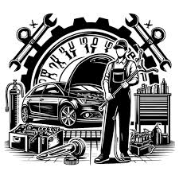
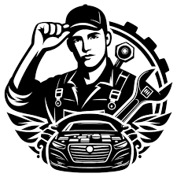
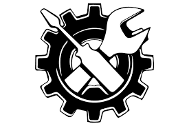
An internal combustion engine, commonly found in automobiles, acts as an energy converter, transforming chemical energy stored in fuel (petrol or diesel) into mechanical energy to create motion. It operates on the principle that if a tiny amount of high-energy-density fuel is ignited in a small, enclosed space (the cylinder), it releases an incredible amount of expanding gas, creating high pressure that pushes a piston. This linear motion is converted into rotational motion by the crankshaft, which ultimately turns the wheels.
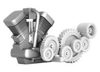
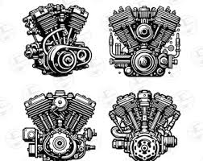
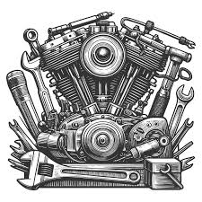
A 2-stroke engine completes a full power cycle in just two piston movements (one up, one down) and one crankshaft revolution. It uses a simple design with ports instead of valves, where the piston seals, compresses, and initiates ignition while simultaneously exhausting gases and taking in new fuel, providing high power-to-weight efficiency.
(Compression & Induction): As the piston moves up, it covers the ports, compressing the air-fuel mixture in the combustion chamber. Simultaneously, it creates a partial vacuum in the crankcase, drawing a new mix of fuel, air, and oil through an intake port.
Downstroke (Power & Exhaust/Scavenging): The spark plug ignites the compressed mixture, forcing the piston down, which creates power. As the piston moves down, it uncovers the exhaust port (allowing gases to escape) and the transfer port, forcing a fresh mixture into the cylinder to start the cycle again.
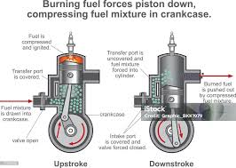
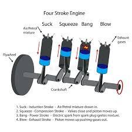
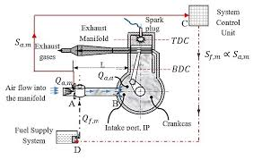
A four-stroke engine is an internal combustion engine that completes one power cycle through four distinct strokes—or movements—of the piston (intake, compression, power, and exhaust) within the cylinder, requiring two full revolutions (\(720^{\circ }\)) of the crankshaft to complete one cycle.
1. Intake Stroke (Suction): The inlet valve opens, and the exhaust valve closes. The piston moves down (Top Dead Centre to Bottom Dead Centre), sucking the air-fuel mixture (charge)< into the cylinder
.2. Compression Stroke:Both valves close. The piston moves up (Bottom Dead Centre to Top Dead Centre), compressing the air-fuel mixture into a tiny volume, which dramatically increases its pressure and temperature.
3. Power Stroke (Expansion): Just before the compression stroke ends, the spark plug ignites the compressed mixture. The resulting explosion creates high pressure that forces the piston down, generating the engine's mechanical power.
4. Exhaust Strokesss: The exhaust valve opens, and the inlet valve remains closed. The piston moves up, pushing the burned exhaust gases out of the cylinder to prepare for the next cycle.
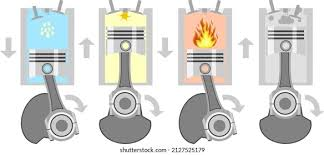
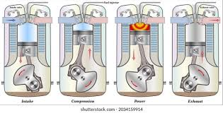
Mechanic Motor Vehicle (MMV) trade mein car ka pahiya (wheel/tyre) kholne ke liye neeche diye gaye tools (auzaar) use hote hain:
Jack / Lifting Jack: Pahiye ko zameen se upar uthane ke liye
.A turbocharger (or turbo) is a turbine-driven, forced-induction device that increases an engine’s efficiency and power output by forcing extra, compressed air into the combustion chamber. It uses waste exhaust gases to spin a turbine, which drives a compressor to deliver more oxygen, allowing the engine to burn more fuel and generate more power.
A Turbocharger is an air compressor powered by an engine's exhaust gases. By forcing extra, compressed air into the engine, it allows the engine to burn more fuel per stroke, massively increasing power output without needing a physically larger engine.
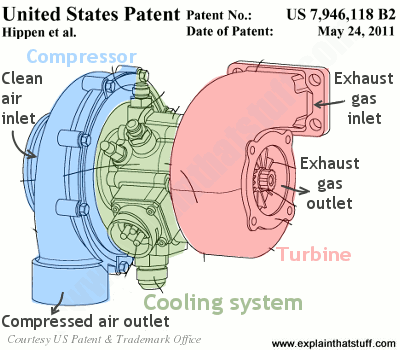
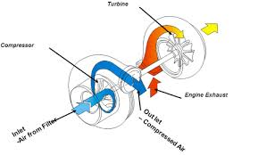
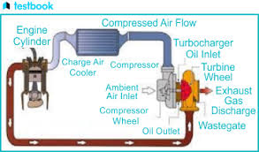
The Supercharger's primary function is to force more air (oxygen) into the engine's cylinders than normal. When more air enters the cylinders, more fuel can be burned. This significantly increases the engine's horsepower and efficiency
An engine intercooler is a specialized heat exchanger used in turbocharged or supercharged engines. Positioned between the turbocharger and the engine's intake, it cools the highly compressed intake air. This dramatically increases air density, which allows the engine to burn more fuel efficiently and generate more horsepower
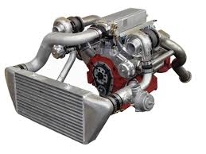
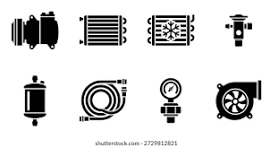
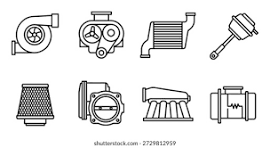
A purpose of a catalytic converter is to use a chamber called a catalyst to change the harmful compounds from an engine’s emissions into safe gases, like steam. It works to split up the unsafe molecules in the gases that a car produces before they get released into the air. The catalytic converter is located on the underside of a vehicle and looks like a large metal box. There are two pipes coming out of it. The convertor utilizes these two pipes and the catalyst during the process of making the gases safe to be expelled. Gases are brought in from the “input” pipe connected to the engine of a vehicle. These are blown over the catalyst, which causes a chemical reaction that breaks apart the pollutants. The less-harmful gases now travel through the second pipe, or the “output,” that is connected to a car’s tailpipe.
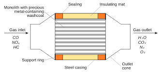
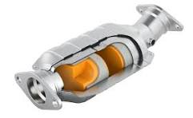
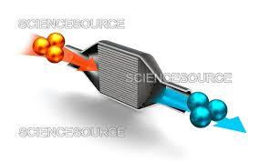
Emission control refers to technologies, policies, and devices used to reduce or prevent the release of toxic gases and harmful particles into the atmosphere from vehicles, factories, and power plant
Pollution reduction: It prevents gases such as carbon monoxide (CO), oxides (NOx) , and hydrocarbons (HC) from being released from unburned fuel in the engine.
Mechanics use a variety of hand tools for motor vehicle (MMV) maintenance and repair. These tools are essential for tightening nuts and bolts, dismantling parts, and making precise adjustments
Wrenches & Spanners:Open-end, ring, and combination spanners of various sizes are used to loosen or tighten nuts and bolts.Sockets & Ratchets Set:Uses different sized sockets with ratchet handles to make quick work of tight spaces
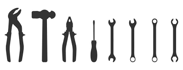
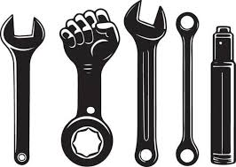
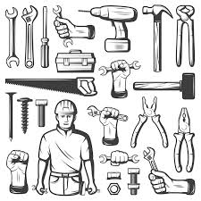
Introducation of Math
Introducation of science
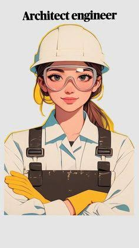
Introduction of Engineering Drawing
Trusted since 2007, Tushar Cyber Cafe & Institute offers practical, job-oriented courses
with expert guidance, hands-on training, flexible timings, and affordable fees—focused on building
real skills and career success.
At Tushar Cyber Cafe & Institute
we don’t just teach—we prepare you for success.